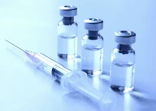
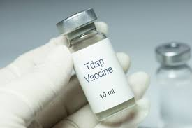

PHARMACY
Pharmacy is the health science that links medical science with chemistry and
it is charged with the discovery, production, control, disposal, safe
and effective use of drugs. The practice of pharmacy requires excellent
knowledge of drugs, their mechanism of action, side effects, interactions,
mobility and toxicity. At the same time, it requires knowledge of treatment and
understanding of the pathological process. Some specialties of
pharmacists, such as that of clinical pharmacists, require other
skills, e.g. knowledge about the acquisition and evaluation of physical and laboratory data.
MEDICINE FOR POLIO
Inactivated polio vaccine (IPV) is the only polio vaccine that has been given in
the United States since 2000. IPV is given by shot in the leg or arm, depending on
the patient’s age. Oral polio vaccine (OPV) is used in other countries.
Dosage-
• 1 dose at age 6 weeks or older
• A second dose 4 or more weeks after the first dose
• A third dose 4 or more weeks after the second dose
• A fourth dose 6 or more months after the third dose

MEDICINE FOR TETANUS
Vaccines are available that can help prevent tetanus
• Diphtheria and tetanus (DT) vaccines
• Diphtheria, tetanus, and pertussis (DTaP) vaccines
• Tetanus and diphtheria (Td) vaccines
• Tetanus, diphtheria, and pertussis (Tdap) vaccines
babies and children younger than 7 years old receive DTaP or DT, while older children
and adults receive Tdap and Td.
